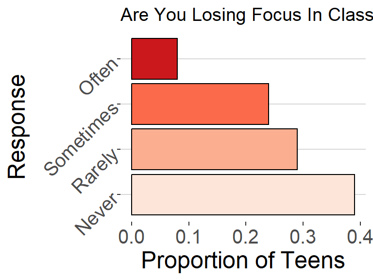
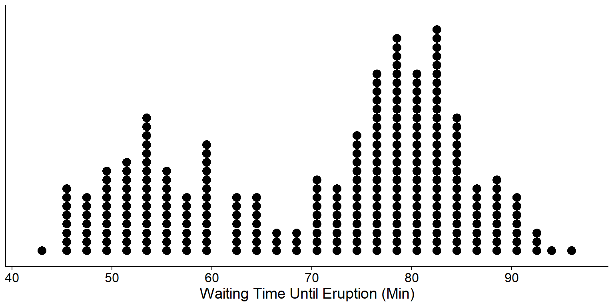
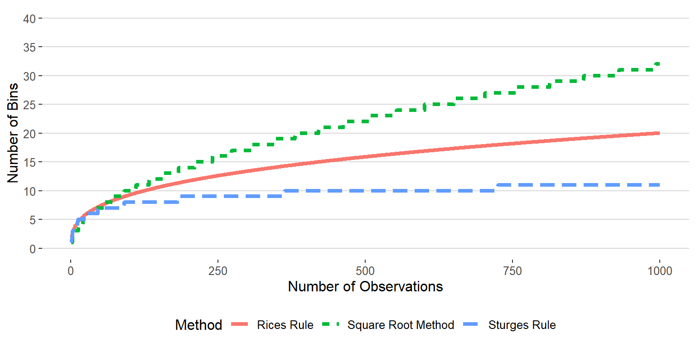
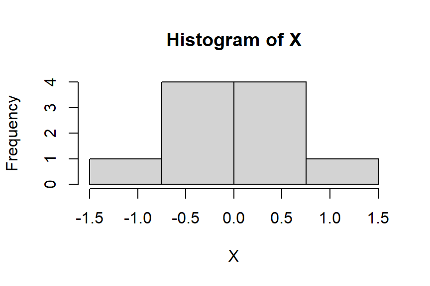

Week 2 Notes
STAT 251 Section 01
Describing and Visualizing Distributions
As we learned in the previous lecture, descriptive statistics is the first step to statistical analysis and involves the summary and organization of data. One of the main ways we can summarize data is to describe the characteristics of the distribution of the variable(s) in the data. A distribution tells us something about what kinds of values a variable can have and how often they occur.
- Consider the following example: Are teens distracted by their cell phones? A study conducted by the Pew Research center surveyed 743 U.S teenagers ages 13-17 to understand how cell phones in class impacted their ability to concentrate. Each student was asked to rate the impact of cell phone use on their concentration based on a Likert scale. The data and a plot of the distribution of survey responses are given below
| Student | Age | Response |
|---|---|---|
| 1 | 13 | Never |
| 2 | 13 | Sometimes |
| 3 | 15 | Never |
| 4 | 17 | Often |
| \(\vdots\) | \(\vdots\) | \(\vdots\) |
| 743 | 16 | Rarely |
- What type of variable is Age?
- What type of variable is Response?

Figure 1. Distribution of student responses to survey question ” Are You Losing Focus In Class By Checking Your Cell Phone? ”
Download the data behind Figure 1 — one row per student. Pew published only the four percentages, so the individual rows are simulated; the response counts (289 Never, 216 Rarely, 178 Sometimes, 60 Often, n = 743) are the published ones and reproduce Figure 1 exactly.
- Looking at the distribution of survey responses above, would you say that most teens feel they are distracted by their cell phones?
Distributions
Formally, a distribution is a function that gives (a) the possible values of a variable and (b) how often each value occurs. The how often is usually described using frequency or relative frequency .
The frequency of a given value is simply a count of the number of times that the given values occurs
The relative frequency of a given value is the proportion of times that the given value occurs
We can also use the cumulative relative frequency to describe how often a variable occurs. The cumulative relative frequency is the proportion of values that are less than or equal to a given value in a distribution.
- Note: As we said with the example about distracted teens, we can talk about the distribution of a categorical variable as well, however we may not use the cumulative relative frequency if there is no natural order to the values (i.e qualitative - nominal).
Consider the following hypothetical set of \(10\) exam scores (out of 10 points) for students in a statistics course \[\{5, 6, 6, 7, 7, 7, 8, 9, 9, 10\}\]
- the possible test scores are \(5, 6, 7, 8,
9,\) and \(10\). Lets try
computing the frequency, relative frequency, and cumulative relative
frequency for students who score a 6 on the exam.
The frequency for an exam score of \(6\) is \(freq(6) = 2\) because \(2\) of the \(10\) students had an exam score of \(6\).
Similarly, the relative frequency for an exam score of \(6\) is \(2/10 = 0.2\).
The cumulative relative frequency for an exam score of \(6\) will be the total number of values in the data that are less than or equal to the value \(6\). This will be the frequency of \(5\)’s plus the frequency of \(6\)’s which will be \((1 + 2)/10 = 3/10\) or \(0.3\). Alternatively we could simply add the relative frequency for an exam score of \(5\) to the relative frequency for an exam score of \(6\): \(0.1 + 0.2 = 0.3\)
| Score | Frequency | Relative Frequency | Cumulative Relative Frequency |
|---|---|---|---|
| 5 | 1 | 0.1 | 0.1 |
| 6 | 2 | 0.2 | 0.3 |
| 7 | 3 | 0.3 | 0.6 |
| 8 | 1 | 0.1 | 0.7 |
| 9 | 2 | 0.2 | 0.9 |
| 10 | 1 | 0.1 | 1.0 |
- The table above is called a frequency table. It is a tabular display of the distribution of a variable.
A frequency table is only one way of describing a distribution, and it is the plainest. The rest of these notes introduce the other ways: how to build a frequency table when the variable is continuous, what features of a distribution we look for, and which graph suits which kind of variable.
Frequency tables for continuous variables
Every frequency table above listed the possible values of the variable in its first column and counted them in the rest. That works whenever the values can be listed.
We can create a frequency table for any type of variable. However, when dealing with quantitative continuous variables we cannot list all possible values because the number of possible values is infinite. Therefore, we usually have to make a decision about how we want to group values of the variable, a process called binning. Binning is a way to group numbers of more-or-less continuous values into a smaller number of “bins”. These bins represent a collection of values that fall into a certain range and make listing the possible values a lot easier.
Consider the following trivial example using the quantitative continuous variable \[X = \{1.23, \ 1.38, \ 1.76, \ 2.60, \ 2.65, \ 2.79, \ 2.89, \ 3.12, \ 3.15, \ 3.18, \ 3.65, \ 3.77, \ 3.87, \ 4.12, \ 4.41\}\]
Each observation of the variable \(X\) is measured with a precision of two decimal places, and no two observations in the sample are identical. As a result if we simply listed the possible values we would have \(15\) unique values each with a frequency of \(1\) which would produce a frequency table that wasn’t very informative. We can, instead, use binning to extract more meaningful information about the distribution of \(X\). Now consider the frequency table using binning:
| Bin | Frequency | Relative Frequency | Cumulative Relative Frequency |
|---|---|---|---|
| \(1 < X \leq 1.5\) | 2 | 0.13 | 0.13 |
| \(1.5 < X \leq 2\) | 1 | 0.07 | 0.20 |
| \(2 < X \leq 2.5\) | 0 | 0.00 | 0.20 |
| \(2.5 < X \leq 3\) | 4 | 0.27 | 0.47 |
| \(3 < X \leq 3.5\) | 3 | 0.20 | 0.67 |
| \(3.5 < X \leq 4\) | 3 | 0.20 | 0.87 |
| \(4 < X \leq 4.5\) | 2 | 0.13 | 1.00 |
The following is another example using \(n = 272\) observations collected on the waiting time between eruptions and the duration of the eruption of the Old Faithful geyser in Yellowstone National Park, Wyoming, USA.
| Duration (min) | Waiting Time (min) |
|---|---|
| 3.6 | 79 |
| 1.8 | 54 |
| 3.333 | 74 |
| 2.283 | 62 |
| 4.533 | 85 |
| 2.883 | 55 |
| 4.7 | 88 |
| 3.6 | 85 |
| \(\vdots\) | \(\vdots\) |
Consider a frequency table to describe the distribution of the variable waiting time (min) :
| Waiting Time | Frequency | Relative Frequency | Cumulative Relative Frequency |
|---|---|---|---|
| \(40 < X \leq 45\) | 4 | 0.015 | 0.015 |
| \(45 < X \leq 50\) | 22 | 0.081 | 0.096 |
| \(50 < X \leq 55\) | 33 | 0.121 | 0.217 |
| \(55 < X \leq 60\) | 24 | 0.088 | 0.305 |
| \(60 < X \leq 65\) | 14 | 0.051 | 0.357 |
| \(65 < X \leq 70\) | 10 | 0.037 | 0.393 |
| \(70 < X \leq 75\) | 27 | 0.099 | 0.493 |
| \(75 < X \leq 80\) | 54 | 0.199 | 0.691 |
| \(80 < X \leq 85\) | 55 | 0.202 | 0.893 |
| \(85 < X \leq 90\) | 23 | 0.085 | 0.978 |
| \(90 < X \leq 95\) | 5 | 0.018 | 0.996 |
| \(95 < X \leq 100\) | 1 | 0.004 | 1.000 |
- How long does a visitor typically have to wait before seeing old faithful erupt?
- Is there more than one “typical” value in this distribution?
IMPORTANT: one thing to consider is that grouping continuous data into discrete intervals leads to a loss of precision. Sometimes this can result in the loss of valuable information present in the original data. In addition, how we choose to bin the data (i.e how wide we make the intervals) may lead to different, sometimes erroneous, conclusions about the distribution and patterns within the data.
Consider the frequency table for the waiting time (min) with only two bins
| Waiting Time | Frequency | Relative Frequency | Cumulative Relative Frequency |
|---|---|---|---|
| \(40 < X \leq 70\) | 107 | 0.393 | 0.393 |
| \(70 < X \leq 100\) | 165 | 0.607 | 1.000 |
- How does using only two bins/intervals alter your conclusion regarding the typical time a visitor must wait before witnessing Old Faithful’s eruption?
Features of a distribution
Descriptive statistics or graphical summaries can tell us a lot about the variables in our data. Graphs help us visualize trends in the data, identify problematic observations, and can help inform the types of analyses we should use. We may be interested in certain features related to the distribution(s) of the variable(s) in our data, such as the shape, center, and variability .
shape refers to how observations cluster across the range of a variable. Certain aspects to note would be where observations are densely packed (values with high frequencies) and where observations are sparser (values with low frequencies). This can give us a feel for where a typical value would appear and what values may be considered “rare” or “extreme”.
Center refers to the “middle point” on the distribution and also supplies information about where a typical value falls.
Variability refers to how tightly observations cluster around the center of a distribution. When values are tightly packed they are said to have low variability vs when they are spread out they are said to have high variability
modal category is a feature of qualitative data only and refers to the most frequent category of a qualitative variable.
Graphs for qualitative data
There are several graphs that can be used to display qualitative data. The most common are bar graphs and pie charts.
A Bar graph is simple and widely used plot for displaying the distribution of categorical variables. Each category is represented by a bar, and the height of the bar corresponds to the frequency or proportion of observations in that category. When the bars are sorted in decreasing frequency it is called a Pareto chart.
A Pie chart is useful for illustrating the proportional contribution of each category to the whole. Beyond this, it is not a particularly useful plot when describing the features of a distribution.
Ex. Recall the Pew Research survey above, asking teens to rate how distracted they are by their cell phones. The following are a bar graph and pie chart of student responses
Download the response data (simulated student-level rows reproducing the published Pew counts).

- what is the modal category of the variable Response ?
Graphs for quantitative data
There are also many plots that can be used with quantitative data. Some of the most commonly used graphs are listed below.
- A dot plot shows a dot for each observation placed
just above the value on the number line for that observation. To
construct a dot plot:
- Draw a horizontal line, label it with the name of variable, and mark regular values of the variable on the line.
- For each observation, place a dot above its value on the number line.
- A stem and leaf plot is similar to a dot plot in
that it displays individual observations of a variable. Each observation
in the plot consists of a stem and a leaf. The stem is all of
the digits except for the last digit. The leaf is the last
digit. For example, take the observation \(12.3\) the stem for this observation is
\(12\) and the leaf is \(3\). To construct a stem and leaf plot:
- Draw a table with two columns and label the left column “Stem” and the right column “leaf”.
- Next, sort the observations from smallest to largest and place the stems in the left column of your table in increasing order.
- in the right column, fill in the leaves of each stem in increasing order.
Example: A dot plot constructed for the \(n = 272\) observations collected on the waiting time between eruptions and the duration of the eruption of the Old Faithful geyser in Yellowstone National Park, Wyoming, USA.

- Think about the shape of this distribution and how it relates to the time that a typical visitor can expect to wait before the geyser erupts. Is the result consistent with the frequency table we constructed earlier?
Example: A stem and leaf plot constructed for the \(n = 272\) observations collected on the waiting time between eruptions and the duration of the eruption of the Old Faithful geyser in Yellowstone National Park, Wyoming, USA.
##
## The decimal point is 1 digit(s) to the right of the |
##
## 4 | 3
## 4 | 55566666777788899999
## 5 | 00000111111222223333333444444444
## 5 | 555555666677788889999999
## 6 | 00000022223334444
## 6 | 555667899
## 7 | 00001111123333333444444
## 7 | 555555556666666667777777777778888888888888889999999999
## 8 | 000000001111111111111222222222222333333333333334444444444
## 8 | 55555566666677888888999
## 9 | 00000012334
## 9 | 6Both dot plots and stem and leaf plots are excellent choices for discrete variables with a small to moderate number of observations. However, when a variable consists of many observations, has low variability, or is continuous, it can be difficult to construct these two plots.
- When dealing with continuous data, it is often necessary to round observations to the nearest tenth before constructing either plot.
The following are alternatives that work for variables of any number of observations.
More graphs for quantitative data
A Histogram is a specialized type of bar graph. It uses bars to portray the frequencies or relative frequencies of the possible outcomes for a quantitative variable of either type. The histogram uses binning to condense the view of a quantitative variable into a smaller set of intervals which makes it particularly useful when the number of observations is large. The width of the bins is arbitrary but all bins should be the same length and cover all possible values of the data. The steps for constructing a histogram are:
- Divide the data into non-overlapping intervals (bins) of equal length.
- Compute the frequency of each interval (this is the same as constructing the frequency table for the chosen bins)
- Label the x-axis with the midpoints or endpoints of each interval.
- Draw a bar over each value or interval with height equal to its frequency or relative frequency
In general, you can choose the number of bins \(k\) you wish to use and set the bin width \(w\) accordingly or alternatively set the bin width you want and use the corresponding number of bins.
- formula for choosing the number of bins based on bin width \(w\)
\[ k = \frac{\max \ x - \min x}{w}\]
- formula for choosing the width based on the number of bins \(k\)
\[ w = \frac{\max x - \min x}{k}\]
where \(\min\) and \(\max\) denote the smallest and largest values of the variable \(x\), respectively.
How many bins should I use? This is actually a question that has received a lot of attention in the scientific literature. Typically, you want to be sure that you don’t use “too few” bins as this can cause misleading conclusions about the features of the distribution. There are several rules that are based on the coverage and number of observations of the variable:
square root method is defined as \(k = \text{round}(\sqrt{n})\). This is a fairly easy and safe rule for choosing the number of bins to use. However, for large sample sizes it can lead to a very large number of bins.
Sturges Rule is defined as \(k = \text{round}(\log_2 n)+1\). This method is not great for a small number of observations (i.e \(n < 30\))
Rices Rule is defined as \(k = 2\sqrt[3]{n}\). This rule is a nice intermediate between Sturges Rule and the square root method.

Consider the following example of histograms constructed for the \(n = 272\) observations collected on the waiting time between eruptions and the duration of the eruption of the Old Faithful geyser in Yellowstone National Park, Wyoming, USA.

Try it out: Construct a histogram for the following 10 observations of the variable \(X\) \[X = \{ -1.49,-0.65,-0.6,-0.54,-0.45,0.01,0.17,0.27,0.51,1.34 \}\] using \(k = 4\) bins/intervals
- In this example, we are given the desired number of bins, so we can use our equation to find the width of the bins \(w\).
\[ w = \frac{1.34 - (-1.49)}{4} = \frac{2.83}{4} = 0.7075 \approx \frac{3}{4} = 0.75 \]
- now that we know about how wide each interval should be we can easily comupute the intervals. First, let \(a\) be the minimum value of \(X\) and \(b\) be the maximum value such that \(\min(X) = a, \max(X) = b\). The first interval is defined as \(a < X \leq a+w\) which gives \(-1.5 < X \leq -0.75\). The second interval is given by \(-0.75 < X \leq -0.75 + w\) or \(-0.75 < X \leq 0\). Continuing this pattern gives the remaining bins yields the following frequency table:
| X | Frequency | Relative Frequency | Cumulative Relative Frequency |
|---|---|---|---|
| \(-1.5 < X \leq -0.75\) | 1 | 0.1 | 0.1 |
| \(-0.75 < X \leq 0\) | 4 | 0.4 | 0.5 |
| \(0 < X \leq 0.75\) | 4 | 0.4 | 0.9 |
| \(0.75 < X \leq 1.5\) | 1 | 0.1 | 1.0 |
- From the frequency table above, we can now easily construct the histogram of \(X\) by simply drawing the appropriate bars over each interval/bin:

If you’d like to read more about scaling interval widths you can check out these references: